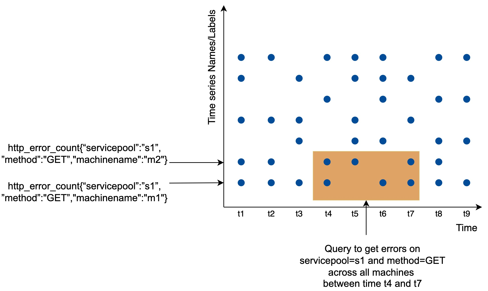

Which database shall I use for the metric collecting system? This is one of the most important questions we need to address in a system design interview.
As shown in the diagram, each label on the y-axis represents a time series (uniquely identified by the names and labels) while the x-axis represents time.
The write load is heavy. As you can see, there can be many time-series data points written at any moment. There are millions of operational metrics written per day, and many metrics are collected at high frequency, so the traffic is undoubtedly write-heavy.
At the same time, the read load is spiky. Both visualization and alert services send queries to the database and depending on the access patterns of the graphs and alerts, the read volume could be bursty.
The data storage system is the heart of the design. It’s not recommended to build your own storage system or use a general-purpose storage system (MySQL) for this job.
A general-purpose database, in theory, could support time-series data, but it would require expert-level tuning to make it work at our scale. Specifically, a relational database is not optimized for operations you would commonly perform against time-series data. For example, computing the moving average in a rolling time window requires complicated SQL that is difficult to read (there is an example of this in the deep dive section). Besides, to support tagging/labeling data, we need to add an index for each tag. Moreover, a general-purpose relational database does not perform well under constant heavy write load. At our scale, we would need to expend significant effort in tuning the database, and even then, it might not perform well.
How about NoSQL? In theory, a few NoSQL databases on the market could handle time-series data effectively. For example, Cassandra and Bigtable can both be used for time series data. However, this would require deep knowledge of the internal workings of each NoSQL to devise a scalable schema for effectively storing and querying time-series data. With industrial-scale time-series databases readily available, using a general-purpose NoSQL database is not appealing.